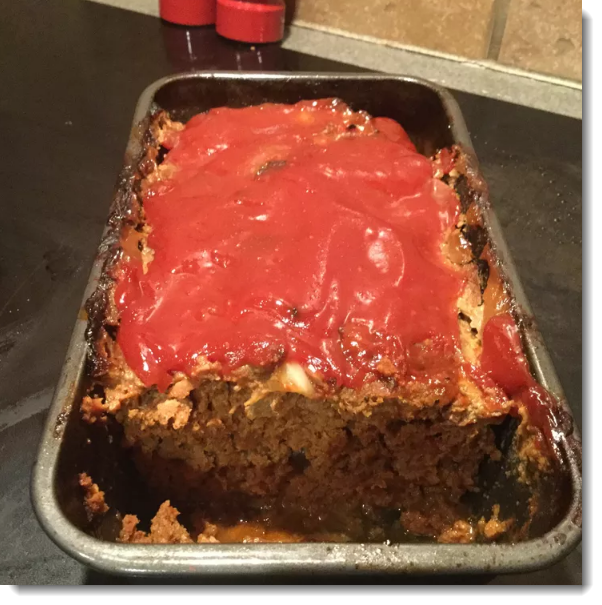

Prep Time:
10 minutes
Cook Time:
35 minutes
Additional Time:
5 minutes
Total Time:
50 minutes
Servings:
8
Yield:
1 Meatloaf
1½ pounds of ground beef
1 tablespoon of Worcestershire Sauce
1 (4 ounce) can of tomato sauce
½ cup of crushed fried pork skins
2 eggs
2½ tablespoons chilli powder
1 tablespoons of garlic salt
1 tablespoons of garlic pepper seasoning
Step 1:
Preheat the oven to 375°F (190°C).
Step 2:
In a large bowl, mix together the ground beef, Worcestershire Sauce, tomato sauce, crushed pork skins, and eggs. Season with chilli powder, garlic salt and pepper. Mix until well blended. Form into a loaf and place into a well-greased loaf pan.
Step 3:
Bake, uncovered, for 35 — 40 minutes in the preheated oven. Let it stand for at least 5 minutes before slicing and serving. Enjoy!